A tasting menu in four courses, prepared for friends from Rome.
C hina is too vast for a single visit, and the choice of what to see can quickly become its own kind of paralysis. With 14 days, 8 travellers, and a preference for the road less crowded and more authentic, I designed a travel menu — four courses, sequenced for an evolving palate. We begin softly in Shanghai, where East and West have been in conversation for two hundred years; it is the gentlest possible introduction. A first course follows in Xi'an — the eastern Rome, an imperial capital that you, dear Romans, will recognise in the bones. Our main course unfolds in Sichuan: pandas in Chengdu, then high into the foothills of Mount Gongga, where glaciers, monasteries, and wild mushrooms wait. We return to Chengdu for dessert — late nights in courtyards, live music, one last hotpot if we have it in us. Nothing here is rushed. The portions are honest. Modifications are welcome.
— the house
East coast inland to imperial heart, then west into the mountains.
2–3 days where East met West, and learned to dance
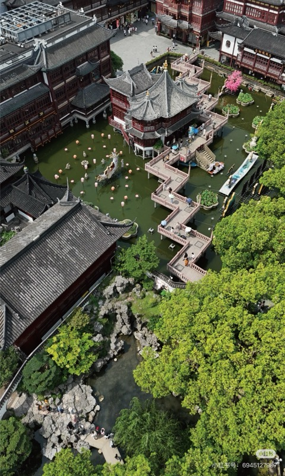
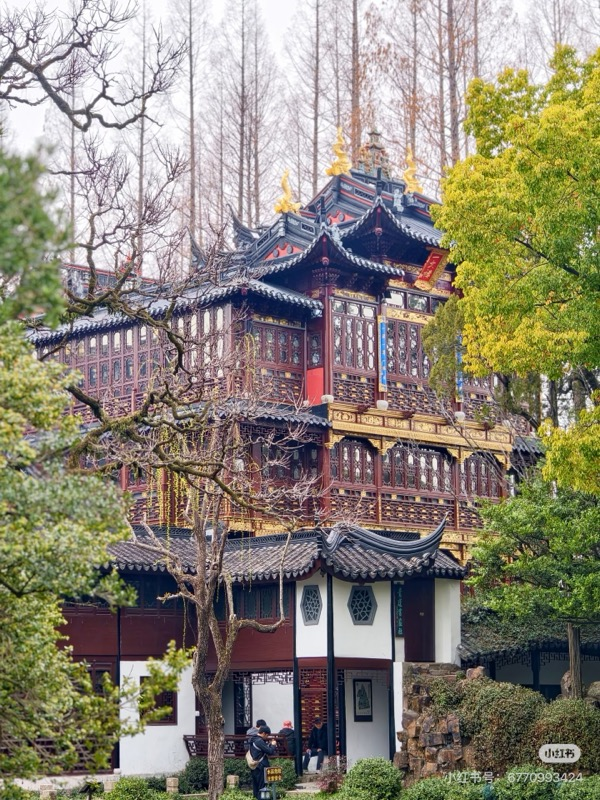
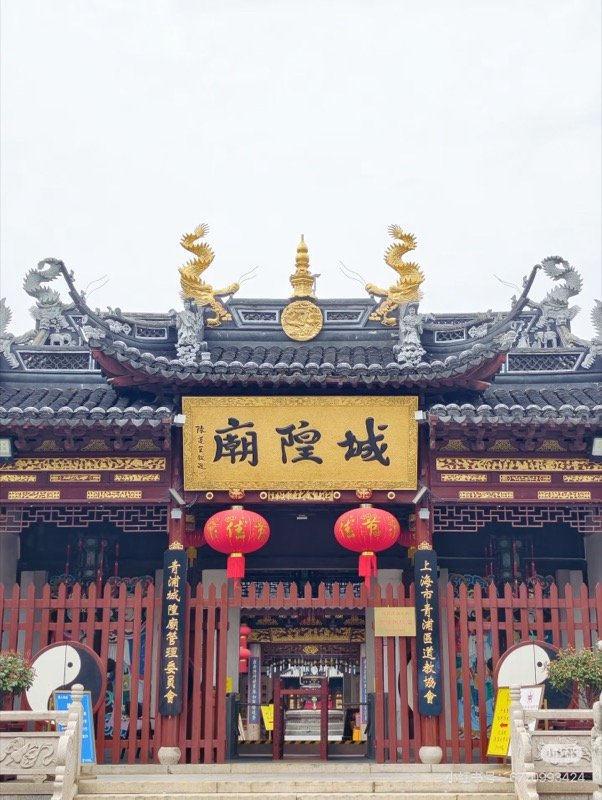
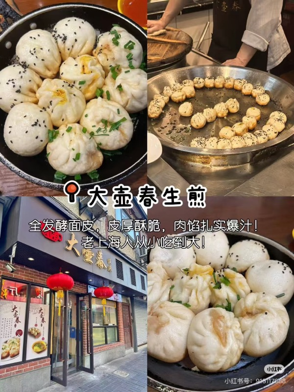
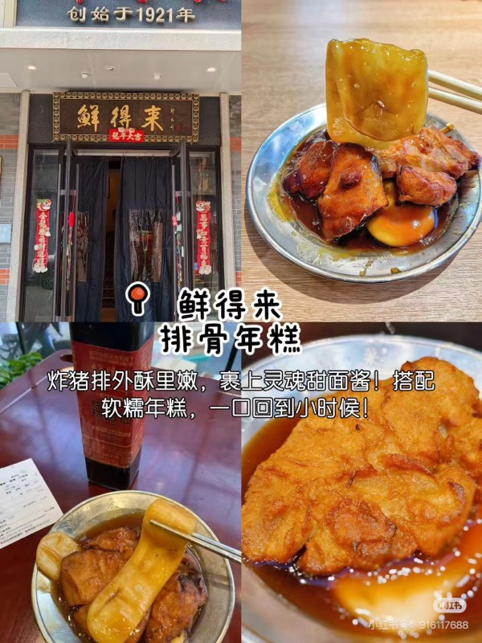
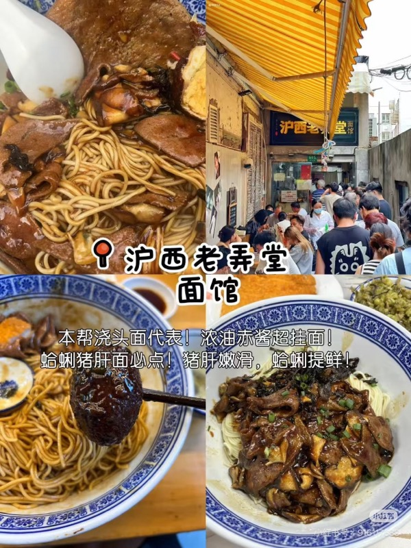
3 days the eastern Rome — an old imperial capital, in the bones
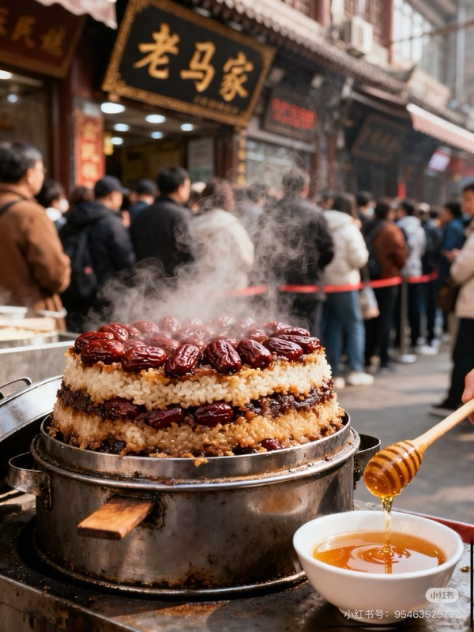
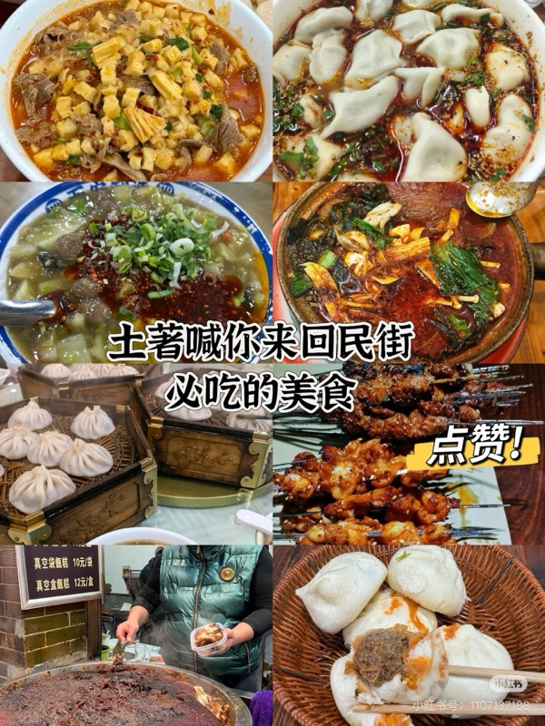
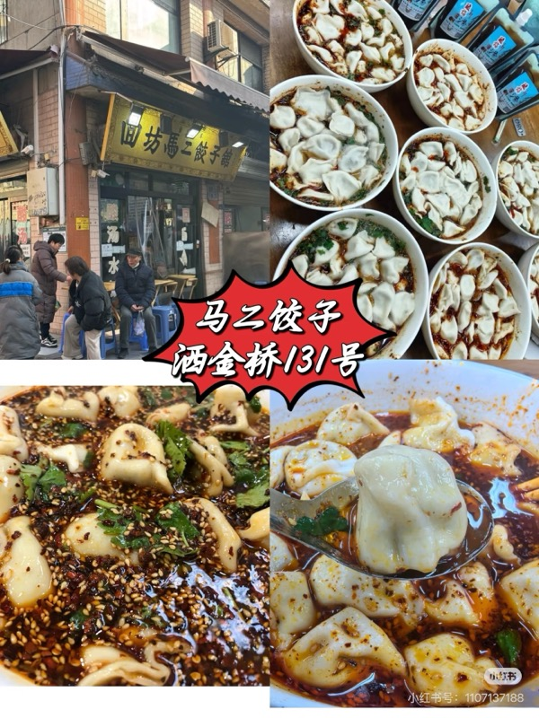
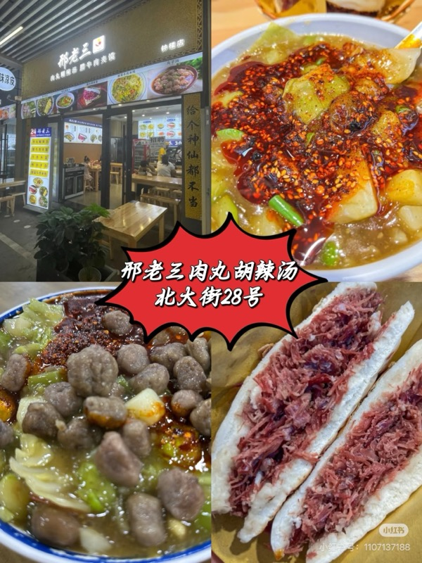
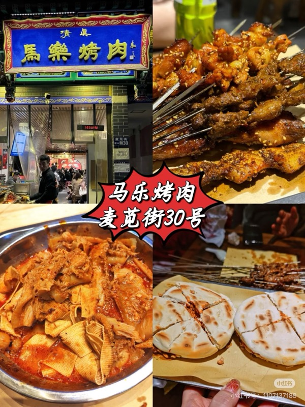
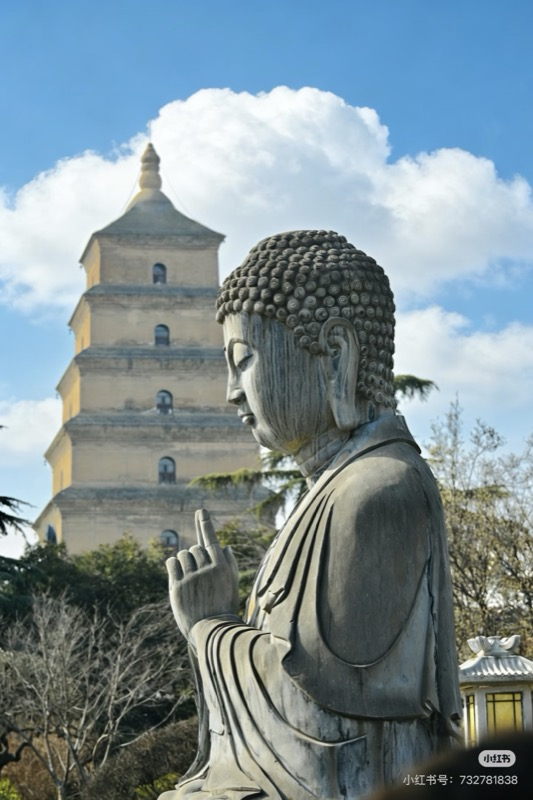
~ 7 days the flavours grow bolder · panda forests, then a turn toward the mountains
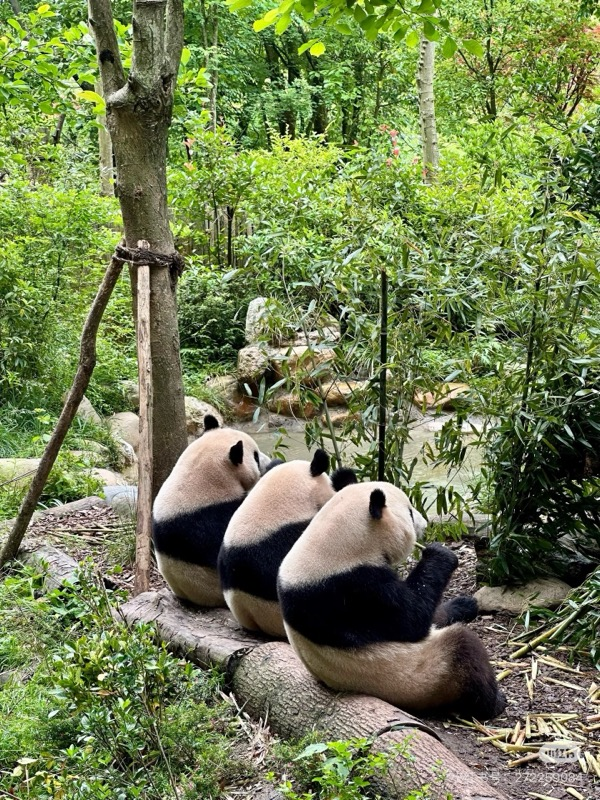
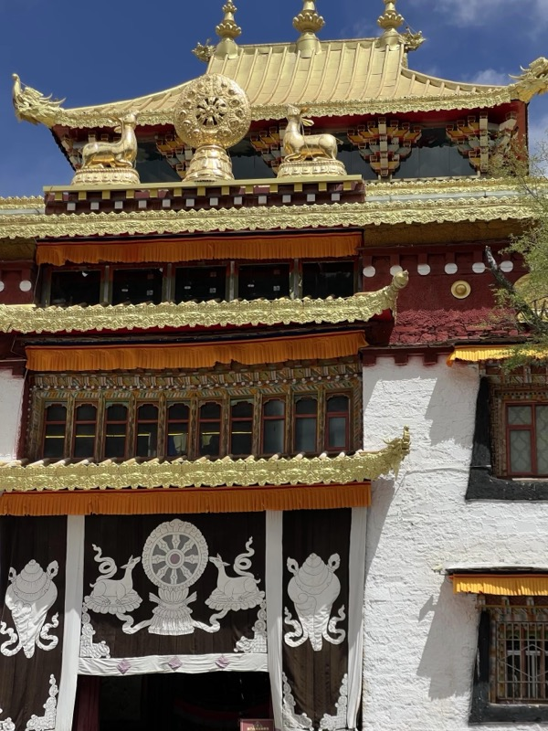
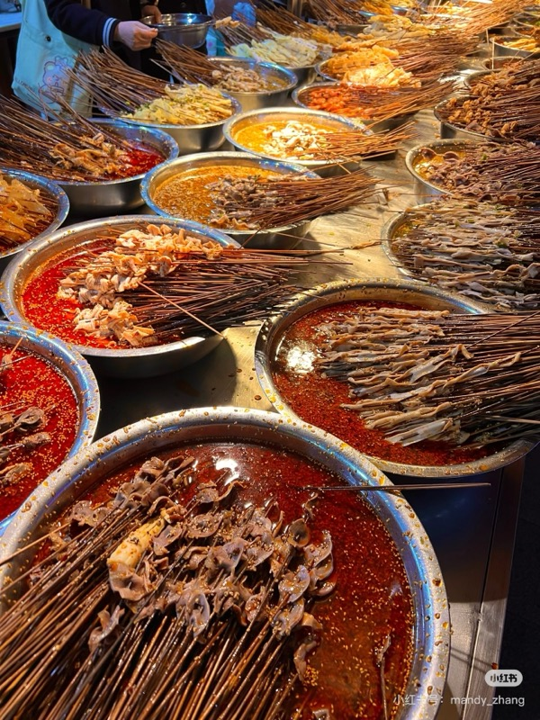
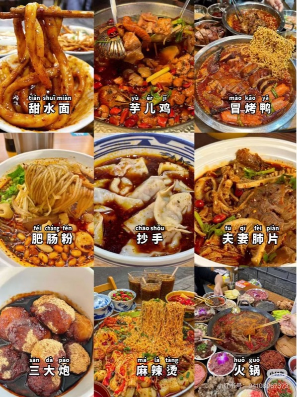
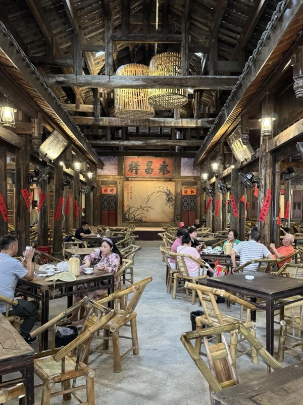
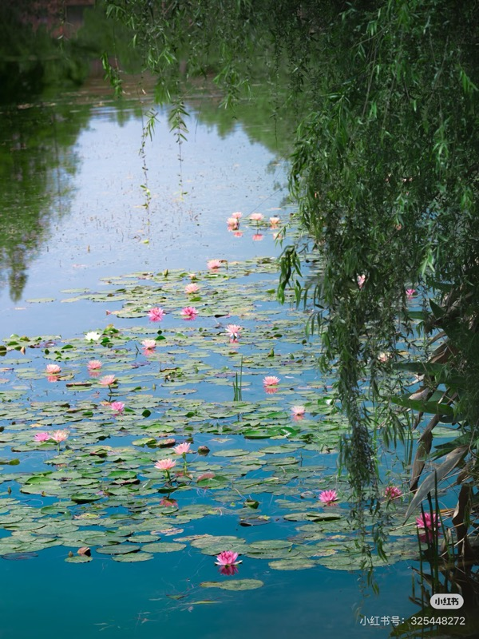
last 2 nights a soft landing — courtyards, live music, one last bowl
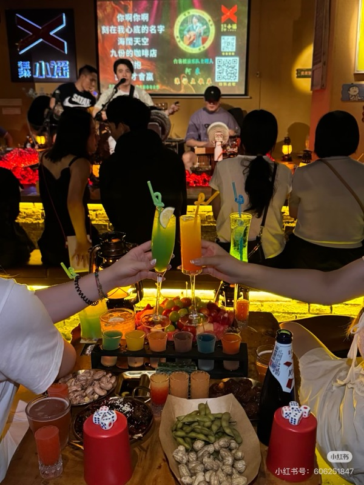
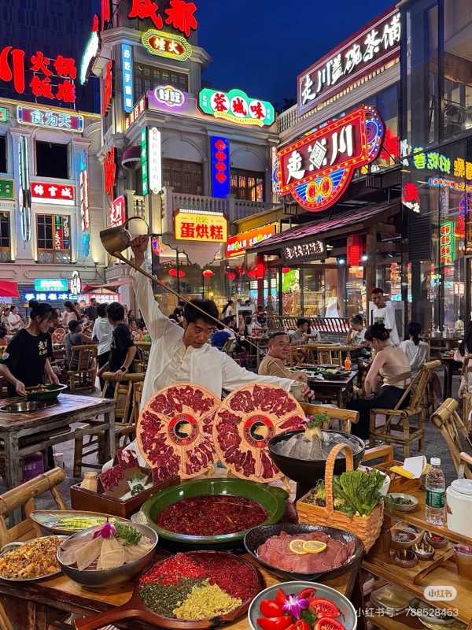
The roads into the mountains are complex and there is no rail or public transport. We will have a dedicated vehicle and local guide to take us there and back from Chengdu.
Excluding international flights. Mid‑range comfort throughout — proper hotels in the cities, simpler lodges on the mountain, no shortage at the table.
À la carte modifications
warmly welcomed.
Tell me what you want more of, less of,
or what you'd like to swap out.